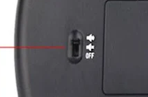
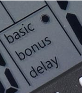
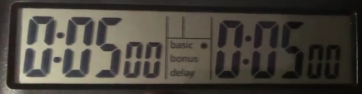
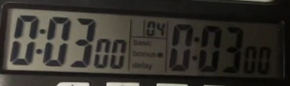

Relógio Digital
Guia passo a passo para configurar o relógio usado nas partidas do torneio.
1 Configuração inicial
Vire o relógio e selecione a opção do sino (Sem som) antes de qualquer coisa.
No menu principal aparecerão as opções: basic, bonus e delay.
2 Modo basic — sem acréscimo
Padrão: 5 minutos × 5 minutos. Para alterar o tempo:
- Aperte o botão reset uma vez
- Navegue entre horas/minutos/segundos com o botão start
- Confirme pressionando confirm uma vez
Para restaurar as configurações: segure reset por 3 segundos. Volta ao menu principal.
3 Modo bonus — com acréscimo
Exibindo 3 min + 2 seg de acréscimo. Para alterar: aperte confirm, navegue com start, altere o acréscimo e confirme novamente. Para iniciar, aperte start. Para restaurar, segure reset.
4 Demonstração em vídeo
Assista ao funcionamento completo do relógio: